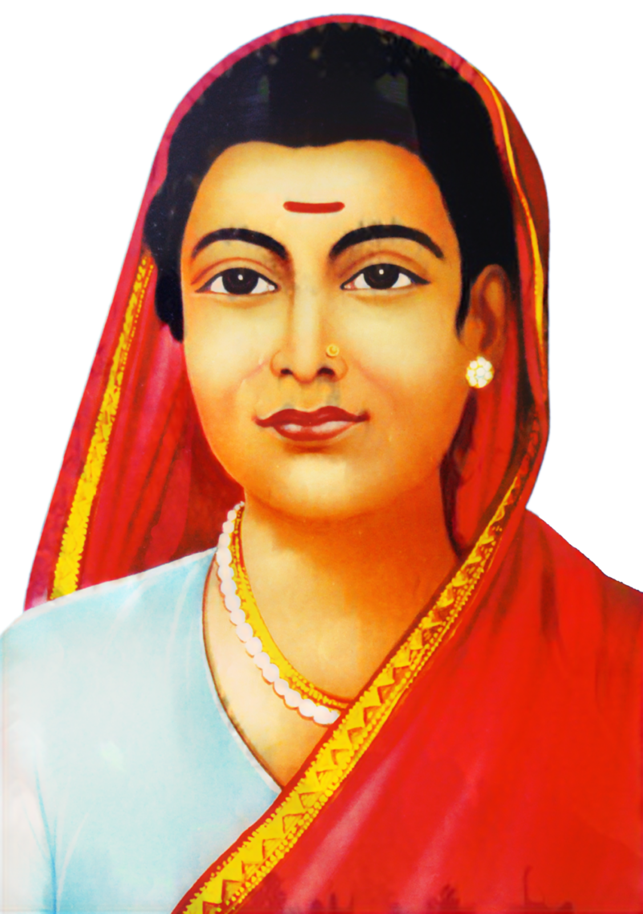

Savitribai Phule

Savitribai Phule (1831-1897)
Savitribai Phule was an Indian social reformer, educationalist, and poet from Maharashtra. She is regarded as the first female teacher of India. Along with her husband, Jyotirao Phule, she played a crucial role in improving women's rights in India during the 19th century. She worked tirelessly to promote education for girls and marginalized communities, establishing the first girls' school in Pune in 1848. Savitribai Phule's efforts laid the foundation for future generations to pursue education and equality.